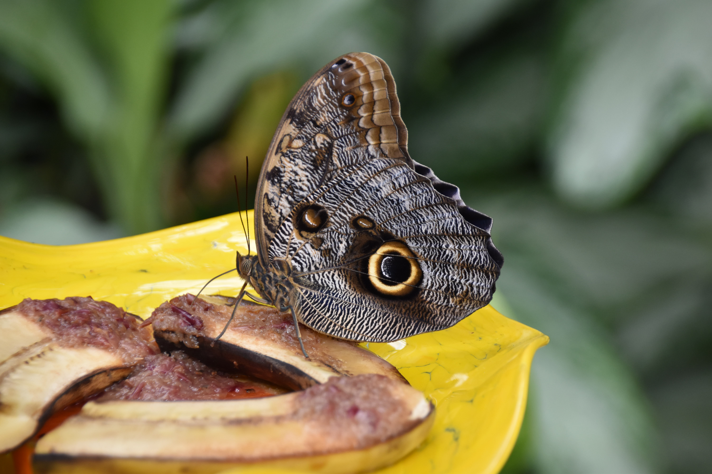
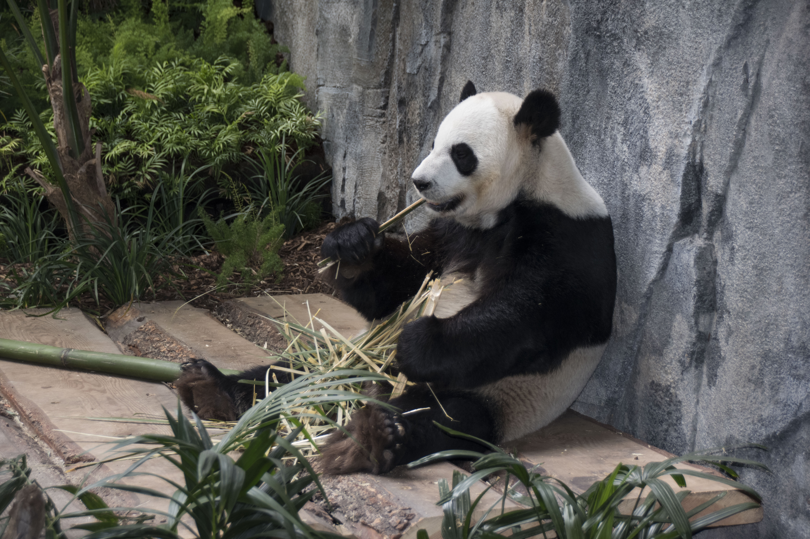
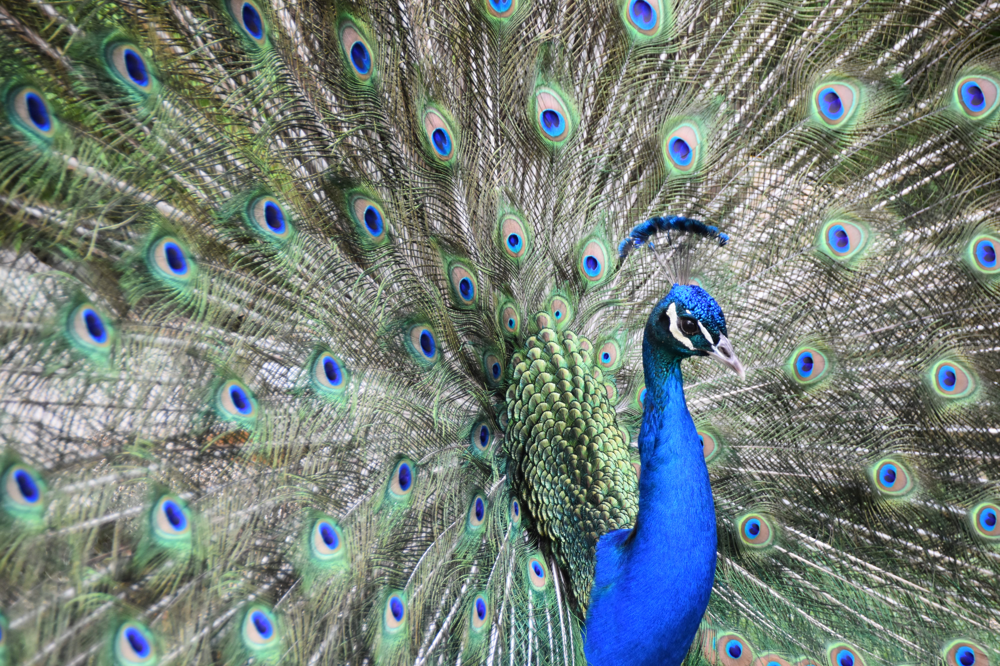
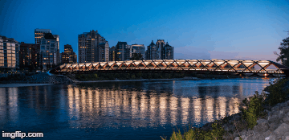

Final Project
Fall 2018
My focus for the final project was inspired by the following photographers:
- Brandon Woelfel
- Scott Kelby
- Tim Flech
My goal was to take pictures taken myself, and edit them to produce more interesting & abstract images.
I wanted to maintain some aspects of their realistic-ness, while also adding elements to make them appear surreal.
The desired effects were achieved through the use of multiple layers and filters including, but not limited to
hue and saturation, posterize, pixelating, black and white, opacity, and gradients.
Find the images in the following slideshow:
Final Presentation
For additional reference, please find the original images below:
|  |
 |
 |
 |
 |
Additionally, please find the edited images below:
Extension #1: Extreme Photoshop
In order to further my photoshop work, I created two images which have a sort of narrative attached to their visual.
The first image is meant to mimic a clock in telling the story of the life cycle of a rose. This image makes excessive use of photo filters, layering, opacity, and hue/saturation.
The images of the roses on the bottom half of the image were taken off the internet and altered to create the cyclic, clock-like appearance.

The second image is just a simple motion-capture type layered image of myself at the Peace Bridge in downtown Calgary. This image made use of selective colour tools, layering, lasso tools, and black and white photo filters.

Extension #2: Gifs
A second way I decided to work on my photoshopped images some more was by creating gifs which show the transition from the original image to the edited image. I produced gifs of two images. I chose these two specific images
because I liked the subtle, yet striking difference which was created using the multitude of photoshop filters. I wanted the gifs to highlight the steps taken in creating the filtered images.
 |
 |
Extension #3: Interactive Online Photo Editor
A third way I decided to extend my work in photoshop was by creating a simple online editor. This tool allows the user to view an image as is, and to then place filters on it to see how they affect the appearance of the image.
Currently, the user is unable to upload their own image and apply effects to them, however, it does work as a tool to introduce users to available filters and effects, and provides users with a more definite understanding of
how each filter affects the appearance of an image.
Photo Editor